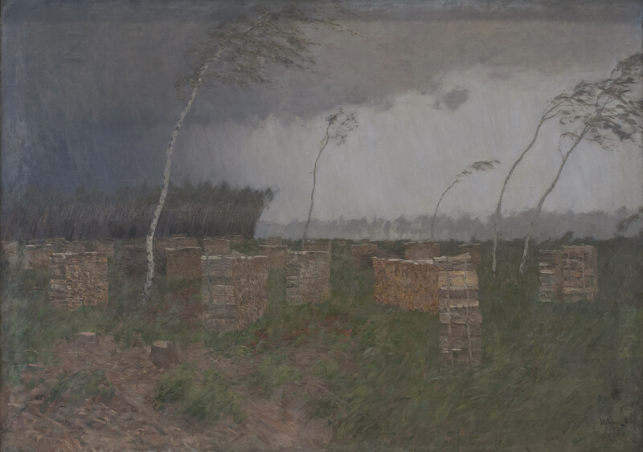

Исаак Ильич Левитан
Буря. Дождь
Картину “Буря. Дождь” Левитан писал будучи смертельно больным. Это его последняя
крупная работа. Врачи не скрывали от него, что его болезнь сердца смертельна. Поэтому несомненно его душевное
состояние проявилось на этой картине. Силы леса на исходе. От него остались лишь пни и поленицы дров. Да несколько
тоненьких берёзок. Им крайне тяжело устоять в буре. Ведь они оголены. Более крепкие соседи срублены. Без их защиты
им не устоять. Смирения со смертью здесь нет. Наоборот, она воспринимается как всеразрушающая стихия. С которой
нет сил бороться.Тонкие березки часто появляются на картинах Левитана. Скорее всего, они отражают его
собственный склад характера. Ранимый, застенчивый и непрактичный человек. Очень талантливый, но мало
приспособленный к жизни.